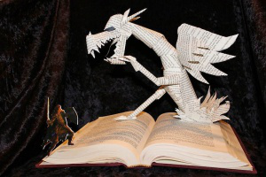
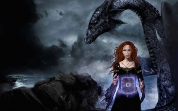

В любом романе фабула (не путать с сюжетом) является основой повествования.
Фабула – это сухие факты, действия и события, соединенные причинно-следственными связями (целями, задачами, мотивами) и выстроенные в хронологическом порядке; это костяк сюжета (герой родился – женился – умер).
Сюжет – это эмоциональный авторский рассказ о событиях, с дополнениями, оценками, возможными отступлениями от изначальной хронологии (герой перед смертью вспоминает, каким родился, когда женился и какую жизнь прожил). Разницу между фабулой и сюжетом можно увидеть на примерах в статье “Что такое сюжет”.
Фабулу называют замыслом сюжета, а сюжет – это уже раскрытие и развитие фабулы на практике – в тексте повествования. И для того, чтобы эффективно работать над сюжетом истории, важно разобраться с самой основой – с правилами построения восьмипунктовой дуги фабулы.
Как построить фабулу романа, используя восьмипунктовую дугу
В построении фабулы выделяется восемь основных фаз-«точек» – элементов так называемой восьмипунктовой дуги. Восемь фаз – стазис, импульс, цель, неожиданность, решающий выбор, кульминационный пункт (климакс), поворот, развязка – это точки развития замысла, от «жили-были» через «встречались-боролись-преодолевали» до «долго и счастливо».
Рассмотрим фазы дуги подробнее.
1. Стазис – по сути, экспозиция: обычный день в обычное время в обычном (или выдуманном) мире. Да, те самые «жили-были», обрисовка ситуации, стартовая площадка, с которой фабульная дуга пойдет «на взлет» – в развитие, через первый импульс.
2. Импульс – непредвиденность. В обычный и ничем не примечательный день происходит нечто из ряда вон выходящее; случай, выбивающийся из событийного ряда, нарушающий привычный ход вещей.
Импульсом может быть все, что угодно, – давнее воспоминание, пожар в доме, приезд дальнего родственника или старого друга, дурной вещий сон, неожиданное увольнение, знакомство и так далее. Главное – импульс делает этот день, статичный и обыкновенный, необычным, провоцирует дальнейшие, не менее неожиданные события и формирует новую цель.
3. Цель – следствие импульса.
Цель может быть двоякой: а) избавиться от последствий импульса, преодолеть его и вернуться в изначальное состояние стазиса; б) удержать, сохранить и развить, чтобы и дальше менять ситуацию.
Как правило, первое (а) – это отрицательный, негативный импульс, а второе (б) – положительный, позитивный. Но может быть и наоборот – и негативный импульс (допустим, пожар в квартире) сработает позитивно (подвигнет зашевелиться, сменить работу и переехать из неблагополучного района), а положительный импульс повлияет на цель негативно – допустим, долгожданный приезд родственника обернется массой проблем и желанием избавиться от гостя, усталостью и стремлением быстрее вернуться в стазисное состояние.
Так или иначе, но цель формируется и влечет за собой массу неожиданностей. И – главную неожиданность.
4. Неожиданность – это событие, либо продвигающее вперед, либо тормозящее.
Продвигающие и приятные неожиданности – это, конечно, хорошо, но неприятные – интереснее и важнее. Не забываем о том, что переживания из-за неудач и неурядиц сближают сильнее, чем счастливая удачливость. И включение в историю благодаря «героическим» неприятностям происходит быстрее.
Однако при работе с неожиданностями важно соблюдать следующие правила:
а) неожиданностей не должно быть слишком много – одна-две;
б) неожиданность должна быть непредсказуемой и удивительной для читателя;
в) она должна быть реалистичной, логичной, правдоподобной, естественно вытекающей из обстоятельств.
И, разумеется, неожиданность должна стать движущей силой для решающего выбора.
5. Выбор – это решение, которое принимается для преодоления неожиданных препятствий и достижения цели.
Выбор должен быть тяжелым, трудным (если возможно – поворотным в судьбе) и обязательно сознательным. Обязательно. Автоматическое решение по принципу «куда несет – туда и плыву, чему быть – тому не миновать» – это, конечно, тоже выбор, но не решающий. Если герой не понимает, что делает, то это случайность, которая никоим образом не влияет на историю героя. Решающий же выбор предшествует повороту в истории и судьбе героя, предполагает понимание ответственности за поступок (что за действие, что за бездействие) и даже в тупике «пробивает» новый путь.
6. Кульминационный пункт (климакс) – это итог неожиданности и решающего выбора; эмоциональное сюжетное событие; фаза, предшествующая повороту.
Например, герой идет на работу и видит горящий дом, из которого доносится детский плач. По натуре трусливому герою предстоит сделать выбор – вызвать пожарных и смотреть или бежать спасать людей. Он выбирает – помогать, и начинается кульминационная сцена спасения людей из пожара. Преодолевая себя и собственную трусоватость, герой приходит на помощь – и опаздывает на работу. А там – злой шеф, который не церемонится с сотрудниками. И за благое дело увольняет нашего замечательного спасителя. А вот и поворот.
7. Поворот – это событие, которое меняет состояние героя и течение всей истории.
Поворот должен быть:
а) логичным и правдоподобным (то есть в нашем примере про злого и нетерпимого к опозданиям шефа нужно сказать в тот момент, когда герой, уже преодолев свою трусость, мечется – помогать или нет, ибо шеф – зараза, а работа крайне нужна);
б) обязательным, неизбежным, но неожиданным для читателя – да, не забываем удивлять;
в) должен вытекать из предшествующих событий – быть их закономерным итогом.
Без подобных поворотов история пуста и пресна, в ней обязательно должно случиться такое, чтобы читатель подскочил от возмущения, страха или изумления с криком: «Почему? За что? Как же так?». И добавить после: «Вот это да! Вот это поворот!». И – «вот это развязка!»
8. Развязка – итог всей дуги, всех фаз.
Ситуация возвращается в стазис – в тот самый обычный день обычного времени и обычного мира, в стабильную ситуацию, и на этом фоне показывается измененное состояние героя. Что он потерял, а что – приобрел. Развязка тоже должна быть и логичной, не выбивающейся из русла реальности, и удивительной для читателя.
Как применять восьмипунктовую дугу в написании книги
Восьмипунктовая дуга применима не только к фабуле всего произведения целиком, но и к любой его композиционной части. Таким образом, дуги могут быть:
Разница между малой и большой дугой – в значении решающего выбора, в весомости цели, в силе неожиданности, в крутизне поворота и глубине изменений героя в развязке.
Как видите, по данной схеме можно выстроить любой замысел, и провести по восьми стержневым точкам и сцену в главе, и каждую главу, и двухтомную историю. Это черновая и мыслительная работа, которую желательно проделать до начала написания. Ведь когда у замысла появляется четкий стержень, становится гораздо легче воплощать его в интересный и захватывающий сюжет.